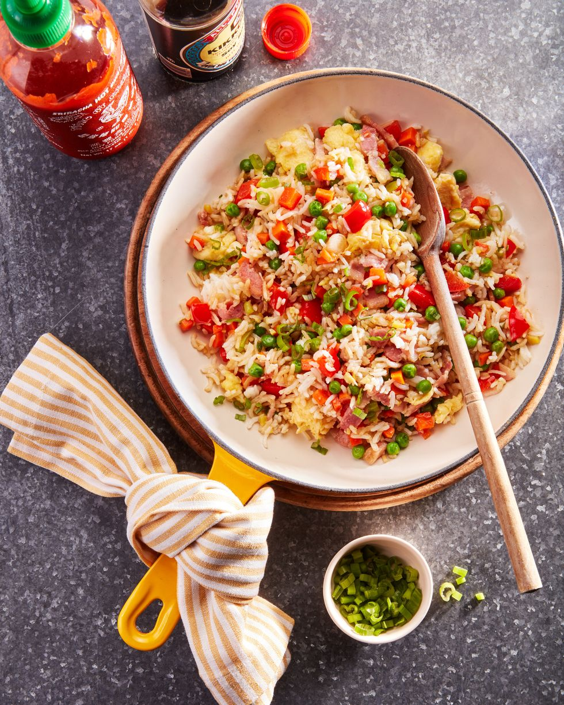

Fried Rice

A flavourful and tasty fried rice dish that can be made with any type of meat and vegetable
This dish is very popular globally, originating from China
Fun Fact! This dish can be cooked in 20 minutes
Ingredients
- 2 tbsp. canola oil
- 2 large eggs, beaten
- 3 slices bacon, diced
- 1/2 red bell pepper, diced
- 3 scallions, chopped, whites and green separated
- 2 medium or 3 small carrots, diced
- 3 garlic cloves, minced
- 1 tbsp. minced fresh ginger
- 1/2 c. frozen peas, defrosted
- 4 c. cooked rice
- 3 tbsp. soy sauce
- 1 tbsp. sesame oil, plus more to taste
Steps
- Heat canola oil in a large skillet over medium heat. Add eggs and cook, stirring,
until curds are light and fluffy, 2 to 3 minutes, transfer to a plate. Add bacon
to skillet and cook until crisp, 5 to 6 minutes.
- Add pepper, scallion whites, and carrots, and cook, stirring occasionally, until soft,
5 to 6 minutes. Add garlic and ginger and cook until fragrant, 1 to 2 minutes.
- Reduce heat to medium-low and add peas and rice. Cook, stirring occasionally, until
warmed through, 4 to 5 minutes. Fold in eggs and season with soy sauce and sesame oil.
Serve immediately topped with scallion greens and more sesame oil alongside.